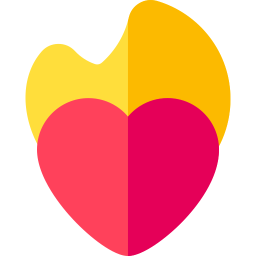
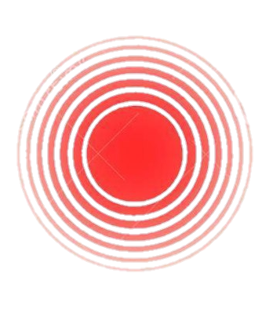

<ion-content>
  <div class="backgroud ion-text-left">

    <ion-list class="lista">


      <ion-list-header><b>Sente ou possui os sintomas:</b></ion-list-header>

      <ion-radio-group allow-empty-selection="true" (click)="saveHealth()" [(ngModel)]="health.ardor">
        <ion-list-header>
          <ion-label><b>Ardor</b></ion-label>
        </ion-list-header>

        <ion-item>
          
          <ion-label>Nenhum</ion-label>
          <ion-radio slot="start" value="nenhum"></ion-radio>
        </ion-item>

        <ion-item>
          
          <ion-label>Baixo</ion-label>
          <ion-radio slot="start" value="baixo"></ion-radio>
        </ion-item>

        <ion-item>
          
          <ion-label>Médio</ion-label>
          <ion-radio slot="start" value="medio"></ion-radio>
        </ion-item>

        <ion-item>
          
          <ion-label>Intenso</ion-label>
          <ion-radio slot="start" value="intenso"></ion-radio>
        </ion-item>

      </ion-radio-group>


      <ion-item (ionChange)="corrimentoHandler($event)">
        
        <ion-label>Corrimento</ion-label>
        <ion-select id="corrimento" placeholder="Selecione" [(ngModel)]="health.corrimento" multiple="true">
          <ion-select-option value="transparente">Transparente</ion-select-option>
          <ion-select-option value="branco">Branco</ion-select-option>
          <ion-select-option value="amarelo">Amarelo</ion-select-option>
          <ion-select-option value="amarelo esverdeado">Amarelo-esverdeado</ion-select-option>
          <ion-select-option value="marrom">Marrom</ion-select-option>
          <ion-select-option value="sangue">Com sangue</ion-select-option>
          <ion-select-option value="rosado">Rosado</ion-select-option>
        </ion-select>
      </ion-item>

      <ion-item>
        
        <ion-label> Coceira</ion-label>
        <ion-toggle (click)="saveHealth()" [(ngModel)]="coceira">
        </ion-toggle>
      </ion-item>

      <ion-radio-group allow-empty-selection="true" (click)="saveHealth()" [(ngModel)]="health.dorNaRelacao">
        <ion-list-header>
          <ion-label>
            <div>
              <div style="float: left">
                
              </div>
              <div class="text">
                <b>Dor na relação:</b>
              </div>
            </div>
          </ion-label>
        </ion-list-header>

        <ion-item>
          <ion-label>Sim</ion-label>
          <ion-radio slot="start" value="sim"></ion-radio>
        </ion-item>

        <ion-item>
          <ion-label>As vezes</ion-label>
          <ion-radio slot="start" value="as vezes"></ion-radio>
        </ion-item>

        <ion-item>
          <ion-label>Não</ion-label>
          <ion-radio slot="start" value="nao"></ion-radio>
        </ion-item>
      </ion-radio-group>

    </ion-list>

    <div class="rodape ion-text-center">
      <ion-button class="voltar" (click)="back()" style="font-family: Verdana, Geneva, Tahoma, sans-serif">
        <b>voltar</b>
      </ion-button>
      <ion-button class="menu" (click)="menu()" style="font-family: Verdana, Geneva, Tahoma, sans-serif"><b>menu</b>
      </ion-button>
      <ion-button class="proximo" (click)="next()" style="font-family: Verdana, Geneva, Tahoma, sans-serif">
        <b>próximo</b>
      </ion-button>
    </div>

    <ion-fab>
      <ion-fab-button (click)="tip()">
        
      </ion-fab-button>
    </ion-fab>

  </div>
</ion-content>